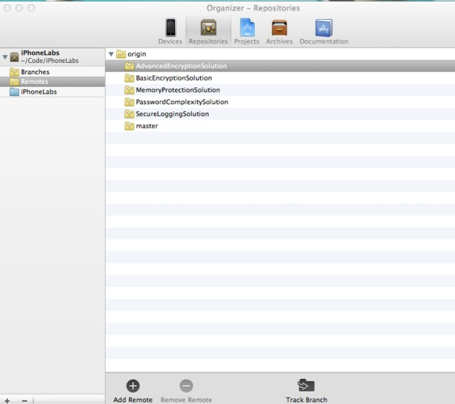
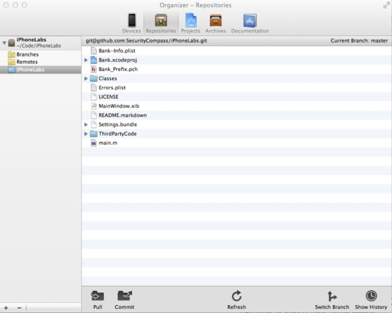
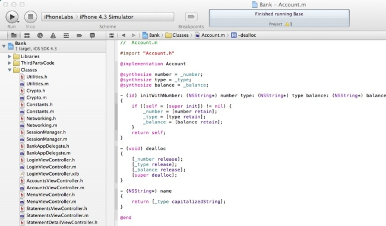
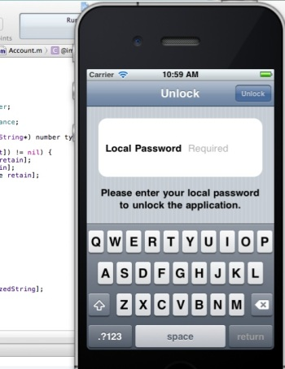

Setup
Setup
We recommend using Xcode 4.1 for the iPhone build of ExploitMe Mobile. Xcode is free for anybody that has purchased OSX and you’ll find it on the OSX CD. Otherwise, you can also get it from the Apple App store.
The nice thing about Xcode is that the latest version 4.1 has support for git repositories making deployment of the application a point and click affair.
When Xcode launches, choose “remote repository” and enter the read-only GIT URL you see on the main iPhoneLabs git page.
It should be: git@github.com:SecurityCompass/iPhoneLabs.git
Xcode will automatically ask you where you wish to locally clone (store on your hard disk) the repository and then the environment should be setup for you immediately. By default, Xcode will load the “master” branch, but you’ll have to use command line git to refresh the branch if you wish to switch to one of the other LabSolutions.
To do this, open the “Organizer” and goto “Repositories”

Click on the remote, and click “Track Branch”. This will clone the branches into your local repository as well, making it easy to switch between branches. You’ll want to switch branches to see the lab solutions.
Again, the “Base” branch contains the vulnerable ExploitMe Mobile application and the branches contain the solution to the vulnerability. This way you can learn the right way to fix and speak to devs about these issues!
Next, click on your iPhoneLabs repository (in my case) in your case, it will be whatever you named your repo.
At the bottom of the screen you’ll see “switch branches”. If you ever wish to view the solutions, this is how you’ll be able to switch between the Git branches.

At this point, you can work with the main ExploitMe Mobile labs on iPhone now. Let’s go to the main Xcode interface. If the project was cloned from Git, you should have no issues running the project now.
NOTE: Make sure that LabServer is running! This is the server component to our ExploitMe Mobile Android and iPhone apps and must be running in the background. It acts as the “Bank” so make sure you have it running first.

When you’re ready to go, hit the “Run” button on the iPhone simulator and you should see the application load up.

The simulator should appear allowing you to start using the application. On first run, ExploitMe Mobile will ask for a banking user credential. By default, the labs are set up to have the users:
- jdoe / password
- bsmith / password
After logging in with this user, you’ll be asked to setup a local password such that you don’t have to re-enter the credentials each and every time. This is common with some banking applications and think of it as a screen lock of sorts.

That’s it! You should be ready to go. Now’s probably a good time to start walking through the Lab tutorial guides.
Navigating the file system
Some of the labs will require accessing files on your phone. If you are using a iOS device, you will need to jailbreak it and install ssh. Then you can ssh into your phone and navigaet the file system to view and download files.
If you are using the iPhone simulator,it is a bit easier to access these files without jail breaking the device since the simulator stores any local files in the following directory where <GUID> is unique to everybody.In the GUID directory, you should find the Base.app folder which is where the contents of the app files will be stored.

~/Library/Application Support/iPhone Simulator/<GUID>/Applications/Base.app
If you’re in OSX Finder, you’ll have to right click Show Package contents to see within the Base.app folder, or just use Terminal to access.You can see above all the iPhone files used by the installed ExploitMe Mobile application.
You can inspect and modify these files as you would normally on an iPhone device that is jailbroken.
Enjoy and please contribute or comment on the project if you can!